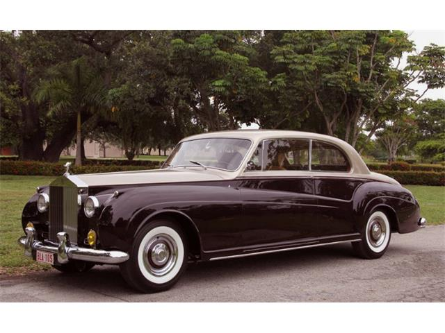

Home
Welcome to Rolls-Royce Classic Cars
Welcome to the epitome of automotive excellence. Step into the world of Rolls-Royce, where opulence meets engineering mastery. With a rich heritage spanning over a century, Rolls-Royce has crafted automotive legends that stand as a testament to luxury, innovation, and unparalleled craftsmanship.
Phantom I
Rolls-Royce Phantom I (1925-1931)

The Rolls-Royce Phantom was Rolls-Royce's replacement for the original Silver Ghost. Introduced as the New Phantom in 1925, the Phantom had a larger engine than the Silver Ghost and used pushrod-operated overhead valves instead of the Silver Ghost's side valves. The Phantom was built in Derby, England, and Springfield, Massachusetts, in the United States. There were several differences in specification between the English and American Phantoms. The Phantom was replaced by the Phantom II in 1929. The designation Phantom I was never used by Rolls-Royce; it is a construct of enthusiasts applied to help distinguish it from other generations with the same model name.
Corniche
Rolls-Royce Corniche
The Corniche, available as coupé or convertible,[6] used the standard Rolls-Royce V8 engine with an aluminium-silicon alloy block and aluminium cylinder heads with cast iron wet cylinder liners. The bore was 4.1 in (104.1 mm) and the stroke was 3.9 in (99.1 mm) for a total of 6.75 L (6,750 cc/411 cuin). Twin SU carburettors were initially fitted, but were replaced with a single Solex 4A1 four-barrel carburetor introduced in 1977.[7] De-smogged export models retained the twin SUs until 1980, when Bosch fuel injection was added. A three-speed automatic transmission (a Turbo Hydramatic 400 sourced from General Motors) was standard. A four-wheel independent suspension with coil springs was augmented with a hydraulic self-levelling system (using the same system as did Citroën, but without pneumatic springs, and with the hydraulic components built under licence by Rolls-Royce), at first on all four, but later on the rear wheels only. Four wheel disc brakes were specified, with ventilated discs added for 1972. The car originally used a 119.75 in (3,042 mm) wheelbase. This was extended to 120 in (3,048 mm) in 1974 and 120.5 in (3,061 mm) in 1979. The Corniche was different from other Silver Shadows in that it had exclusive half wheel covers with stainless steel trim (for brake cooling), a 3-spoke steering wheel with a wood rim, and Rolls Royce's first standard tachometer.
Your Rolls-Royce Experiece
We value your feedback
At Rolls-Royce, we are committed to providing unparalleled luxury and service to our esteemed customers. Your feedback is vital in helping us maintain our standards of excellence and enhance your ownership experience. Whether you're sharing your thoughts on a recent purchase, a memorable road trip in your Rolls-Royce, or suggestions for improvement, we want to hear from you. Your feedback matters and helps us shape the future of Rolls-Royce vehicles. How was your Rolls-Royce experience?
Please take a moment to share your thoughts, comments, or reviews about your Rolls-Royce car. Your input enables us to continually strive for perfection and deliver exceptional automotive craftsmanship.
Share Your Thoughts
Your Feedback: Thank you for being part of the Rolls-Royce legacy.